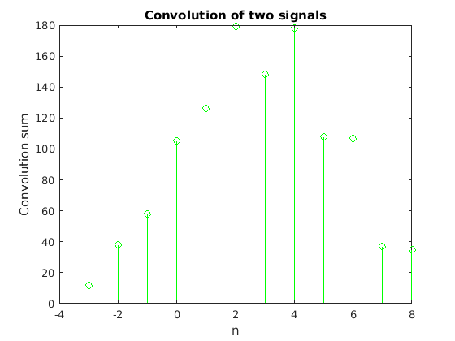
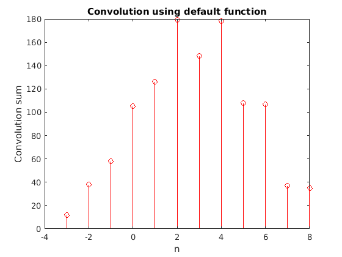

clear; clc; x = [ 4 2 6 3 8 1 5 ] % x1 h = [ 3 8 6 9 6 7 ] % x2 ax = -1 % starting point of x1 ah = -2 % starting point of x2 % selecting the final start point a = ax+ah; % a) first part of solution m = length(x); n = length(h); X = [x,zeros(1,n)]; H = [h,zeros(1,m)]; % number of terms after convolution n + m - 1 for i = 1:m+n-1 Y(i)=0; % defining the i'th term 0 initially for j = 1:m % for all the terms in x if(i-j+1>0) % but not the terms which are not overlapped Y(i) = Y(i) + X(j)*H(i-j+1); % summation to Y and H is flipped end end end % defining the x axis for the the convolution solution x1 = a:a+numel(Y)-1; % plotting stem(x1,Y,'g') ylabel('Convolution sum') xlabel('n') title('Convolution of two signals') % b) second part of solution % conv(X,H) is the default function for the convolution of two signals figure() stem(x1,conv(x,h),'r') ylabel('Convolution sum') xlabel('n') title('Convolution using default function')
x =
4 2 6 3 8 1 5
h =
3 8 6 9 6 7
ax =
-1
ah =
-2
 